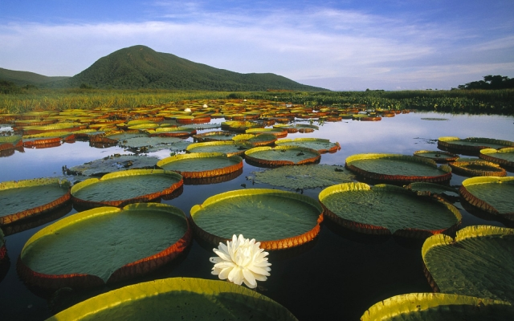

|

|
Historia
Leticia es un municipio colombiano localizado en el extremo sur del país. Es la capital del departamento del Amazonas. A pesar de estar alejada de los principales centros urbanos del país, sin comunicación por carretera, constituye un nexo comercial importante con Brasil, debido a su situación de ciudad limítrofe sobre el río Amazonas y formando el trifinio conocido como Tres Fronteras con Perú y Brasil.
Actualmente reúne casi el 60 % de la población del departamento y la mayor parte indígena de diversas comunidades como: los uitotos, ingas, tucanos, ticunas y nukak. La ciudad tiene un gran crecimiento demográfico y técnicamente forma una sola ciudad con el municipio brasileño de Tabatinga.
|